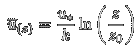

|
GEOB 300 - The wind profile under neutral conditions.
This applet illustrates how the vertical profile of horizontal wind changes with shear stress (expressed as friction velocity u*) and with roughness (expressed as roughness length z0). We are modelling the profile using the logarithmic wind law for neutral conditions:

The left graph shows the wind profile on a linear-linear scale, the right graph displays the same data but drawn on a linaer-log scale.
Friction velocity u* (m s-2):
Roughness length z0 (m):
|